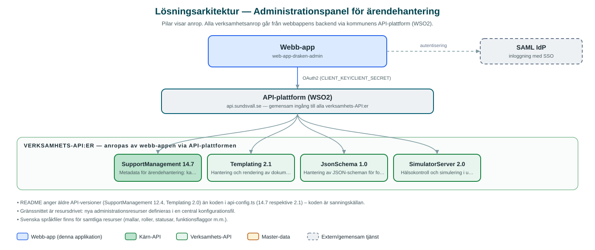

Administrationspanel för ärendehantering
Ett administrationsgränssnitt där behöriga administratörer konfigurerar kommunens ärendehanteringssystem med kategorier, statusar, roller, mallar och regler.
Om applikationen
Tjänsten är en administrationspanel för kommunens ärendehanteringssystem. Här hanterar administratörer den metadata som styr hur ärenden registreras och handläggs: kategorier, statusar, etiketter, kontaktorsaker, roller och namnrymder per verksamhetsområde.
En central del är mallhanteringen, där dokumentmallar för exempelvis beslut kan sökas, förhandsgranskas, testas och godkännas för produktion. Panelen kan även jämföra mallar mellan test- och produktionsmiljö och visa var de skiljer sig, saknas eller är synkade, vilket ger trygg kvalitetssäkring före driftsättning.
Dessutom finns stöd för att administrera JSON-scheman för formulär, funktionsflaggor, användare och e-postintegration. Åtkomsten begränsas till en särskild administratörsgrupp.
Det här stödjer applikationen
- Ärendemetadata – Hantera kategorier, statusar, etiketter, kontaktorsaker och roller som styr ärendeflödet.
- Mallhantering – Sök, förhandsgranska, testa och godkänn dokumentmallar, t.ex. beslutsmallar, för produktion.
- Miljöjämförelse – Jämför mallar mellan test- och produktionsmiljö och se vad som skiljer eller saknas.
- Formulärscheman – Administrera JSON-scheman som styr formulär i ärendehanteringen.
- Funktionsflaggor och användare – Slå på och av funktioner samt hantera användare och e-postintegration.
Teknisk dokumentation
Nedan beskrivs hur applikationen är uppbyggd, vilka API:er den använder och vad som krävs för att driftsätta den. Informationen är härledd ur källkoden och dess konfiguration på GitHub.
Arkitektur

Applikationen består av en webbaserad frontend (Next.js 15, React 18, sk-web-gui, next-i18next) och en backend (Node.js/Express med TypeScript (routing-controllers)) som utvecklas i samma kodbas. Verksamhetsanrop går via kommunens gemensamma API-plattform (WSO2) – frontend pratar aldrig direkt med underliggande system. Inloggning: SAML (SSO) med krav på särskild administratörsgrupp (ADMIN_PANEL_GROUP). Övriga integrationer som förekommer i koden: WSO2 API-gateway (api.sundsvall.se), SAML IdP.
Teknikstack
- Frontend: Next.js 15, React 18, sk-web-gui, next-i18next
- Backend: Node.js/Express med TypeScript (routing-controllers)
- Test: Jest, Cypress
API-beroenden
Applikationen konsumerar följande API:er via kommunens API-plattform. Versionerna är hämtade ur källkodens API-konfiguration.
| API | Version | Användning |
|---|---|---|
| SupportManagement | 14.7 | Metadata för ärendehantering: kategorier, statusar, etiketter, roller och namnrymder. |
| Templating | 2.1 | Hantering och rendering av dokumentmallar. |
| JsonSchema | 1.0 | Hantering av JSON-scheman för formulär. |
| SimulatorServer | 2.0 | Hälsokontroll och simulering i utvecklingsmiljö. |
Konfiguration och driftsättning
- Miljöfiler: admin/.env, backend/.env.development.local och .env.test.local
- CLIENT_KEY/CLIENT_SECRET för WSO2-prenumerationer krävs
- SAML-certifikat och nycklar (SAML_ENTRY_SSO, SAML_IDP_PUBLIC_CERT, SAML_PRIVATE_KEY m.fl.)
- API_BASE_URL mot kommunens API-gateway (test: api-test.sundsvall.se)
Noterbart ur källkoden
- README anger äldre API-versioner (SupportManagement 12.4, Templating 2.0) än koden i api-config.ts (14.7 respektive 2.1) – koden är sanningskällan.
- Gränssnittet är resursdrivet: nya administrationsresurser definieras i en central konfigurationsfil.
- Svenska språkfiler finns för samtliga resurser (mallar, roller, statusar, funktionsflaggor m.m.).
Källkod
Källkoden är öppen och finns hos Sundsvalls kommun på GitHub. I källkodsförrådet finns även instruktioner för att klona, konfigurera och starta applikationen i egen miljö.